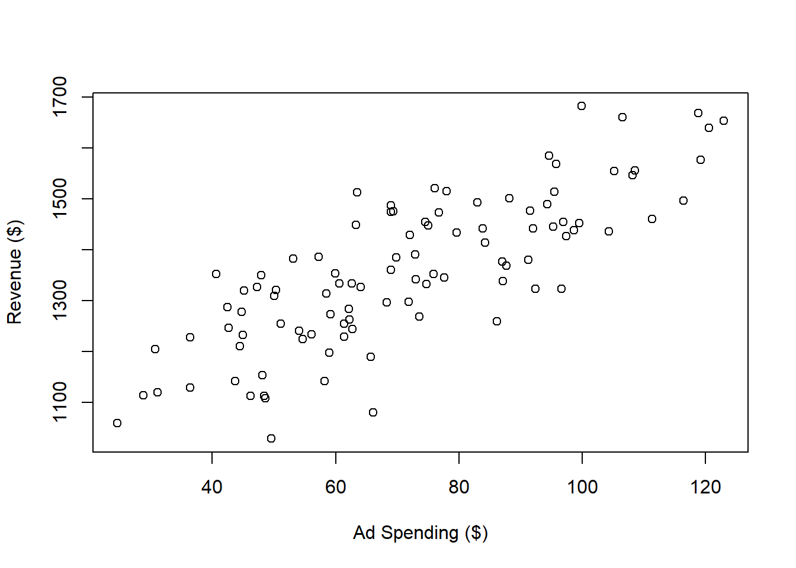
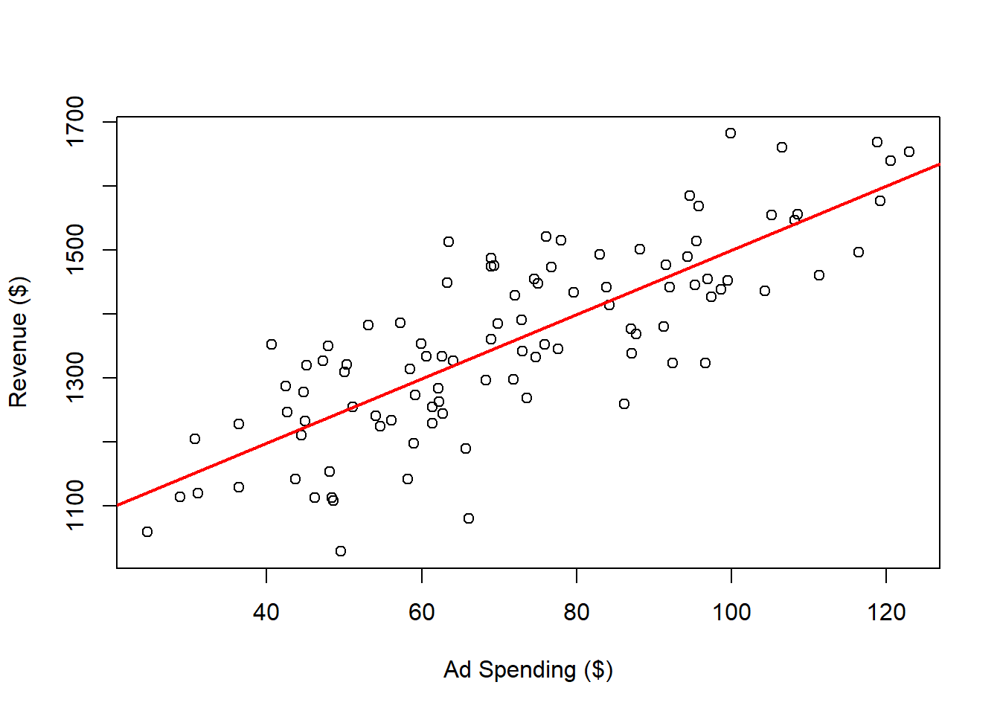
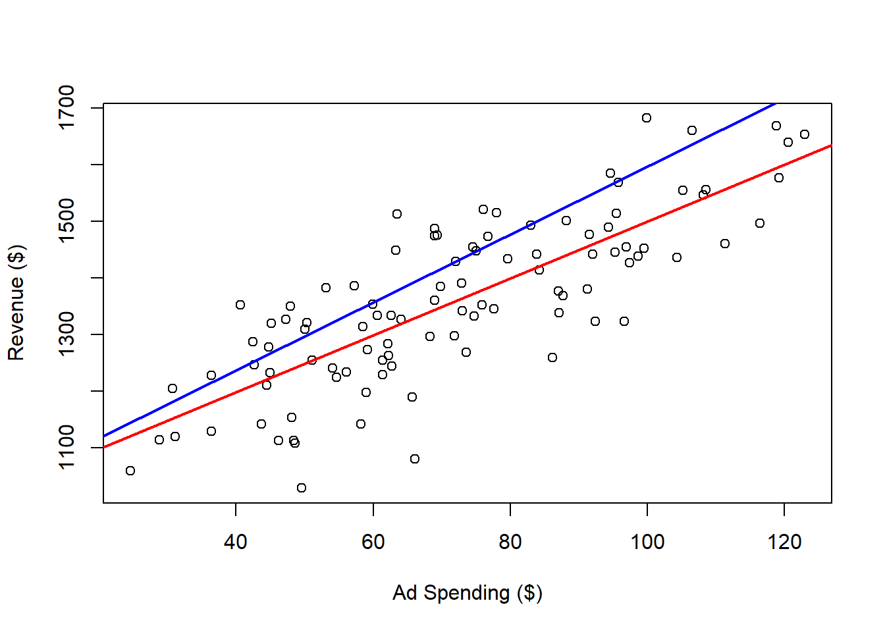
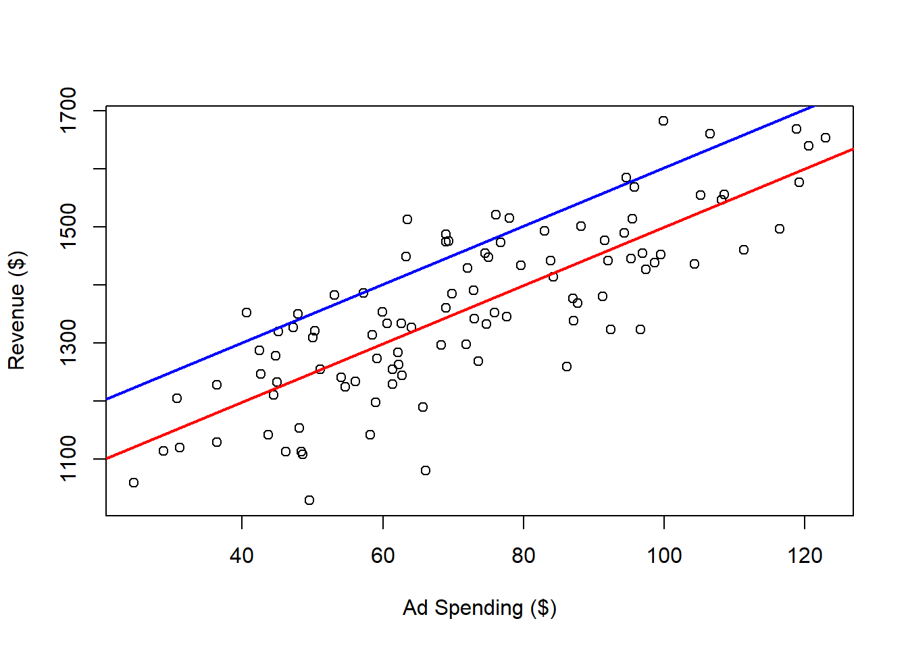
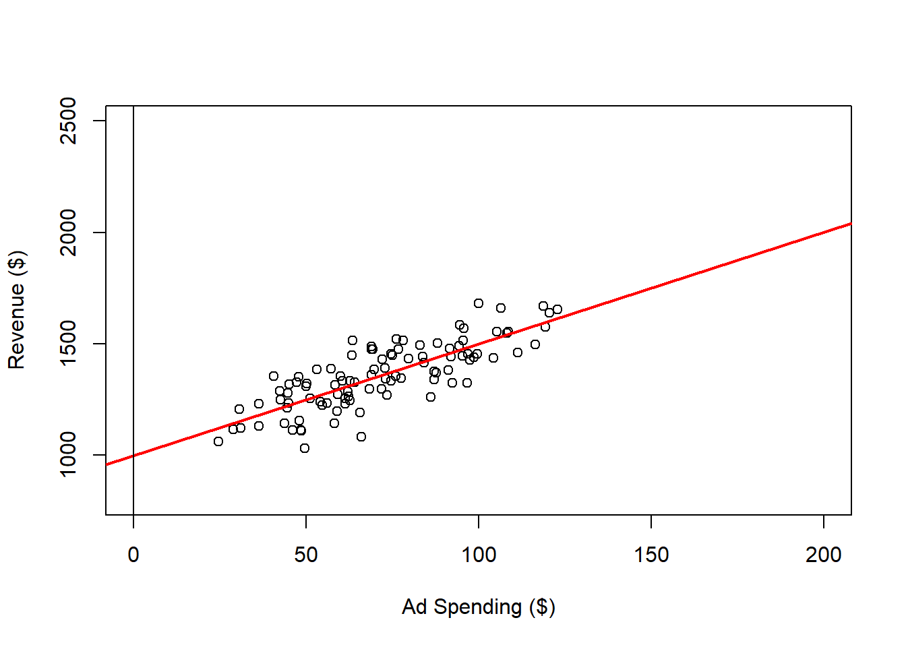
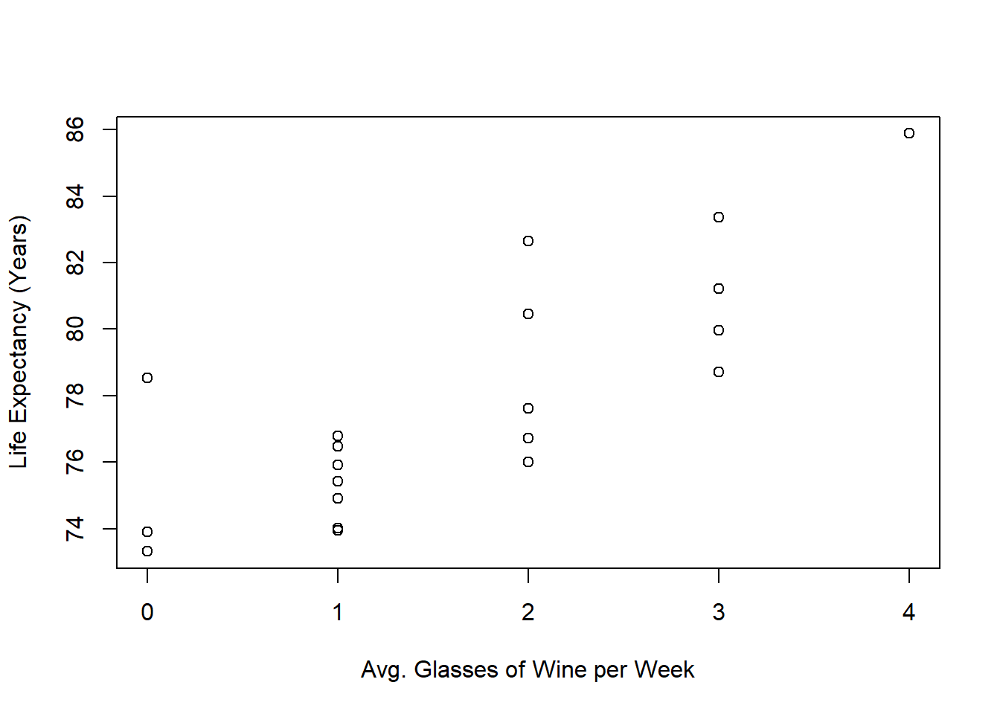
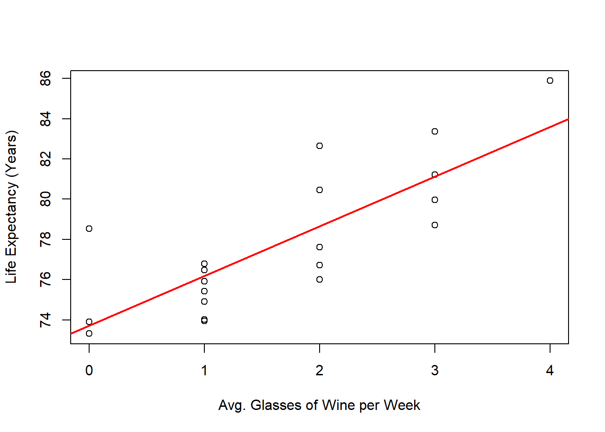
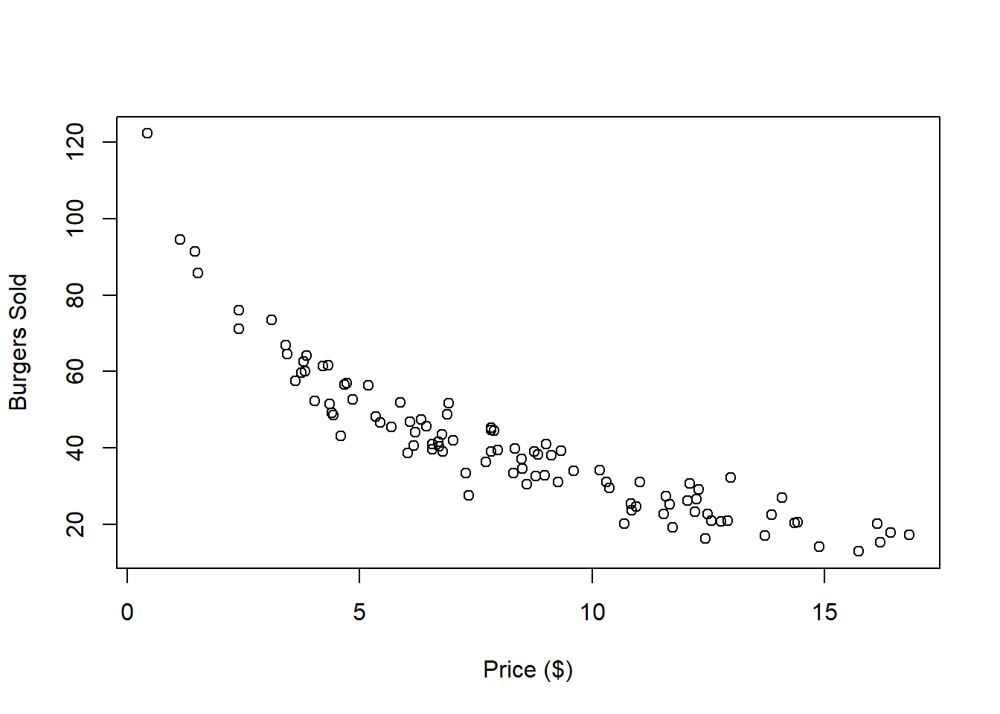
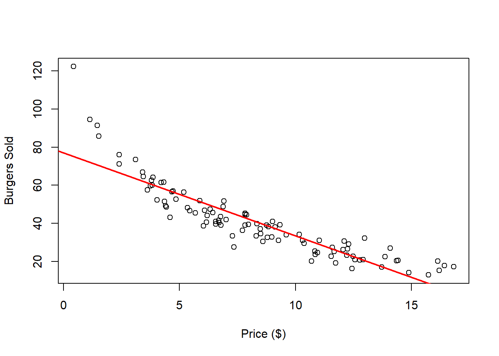

3 Introduction
3.1 Objectives of Linear Regression
Linear regression is a statistical method used to analyze the relationship between at least two variables: one dependent variable and at least one independent variable. This technique is closely tied to the correlation coefficient, which measures the strength and direction of a linear relationship between variables. In this document, we will explore how these concepts are connected.
Linear regression is typically applied for three main purposes:
- Description: To describe the relationship between the variables under analysis.
- Control: To predict how changes in the independent variables will affect the dependent variable.
- Prediction: To forecast the value of the dependent variable based on new observations of the independent variables.
3.2 Examples
3.2.1 Ad Spending
Imagine you are a newly hired data scientist at a mattress company. Your manager asks you to analyze the relationship between Google ad spending and mattress sales revenue.
To illustrate this scenario, I have simulated a dataset:
# Ad Spending Example
# Set Seed
set.seed(8272024)
# Data Simulation
x <- rnorm(n = 100,
mean = 70,
sd = 30)
y <- 1000 + 5 * x + rnorm(n = 100, mean = 0, sd = 100)
# Creates the Data Frame
datAd <- data.frame(cbind(y,x))
# Names the Variables
colnames(datAd) <- c("Revenue", "Ad Spending")
# Saves to csv
write.csv(x = datAd[, c(1, 2)],
file = "Ad spending Data.csv", row.names = FALSE)You can load the dataset as follows:
dat <- read.csv(file = "Ad spending Data.csv")To visualize the data:
dat <- read.csv(file = "Ad spending Data.csv")
plot(x = dat$Ad.Spending,
y = dat$Revenue,
xlab = "Ad Spending ($)",
ylab = "Revenue ($)")
Next, you can perform a linear regression analysis:
The most important results from the regression analysis can be summarized as follows:
##
## Call:
## lm(formula = Revenue ~ Ad.Spending, data = dat)
##
## Residuals:
## Min 1Q Median 3Q Max
## -248.394 -58.805 3.782 63.577 196.745
##
## Coefficients:
## Estimate Std. Error t value Pr(>|t|)
## (Intercept) 997.3894 28.8185 34.61 <2e-16 ***
## Ad.Spending 5.0247 0.3818 13.16 <2e-16 ***
## ---
## Signif. codes: 0 '***' 0.001 '**' 0.01 '*' 0.05 '.' 0.1 ' ' 1
##
## Residual standard error: 89.01 on 98 degrees of freedom
## Multiple R-squared: 0.6386, Adjusted R-squared: 0.6349
## F-statistic: 173.2 on 1 and 98 DF, p-value: < 2.2e-16For now, let’s focus on the estimate for the intercept and the Ad.Spending coefficient. The intercept indicates the expected revenue when ad spending is zero. Based on your analysis, you observe that even without an ad campaign, mattress sales generate 997.3893514. The coefficient for Ad.Spending shows that each dollar spent on ads increases revenue by 5.0247439.
To visualize the regression line:
plot(x = dat$Ad.Spending,
y = dat$Revenue,
xlab = "Ad Spending ($)",
ylab = "Revenue ($)")
abline(a = outReg$coefficients[1],
b = outReg$coefficients[2],
col = 'red',
lwd = 2)
The red regression line represents the “best fit” for these variables. In this context, “best fit” means the line that minimizes the sum of the squared distances from each point to the line. For comparison, here are examples of other lines that do not fit as well:
Different slope (coefficient for the Ad.Spending variable):
plot(x = dat$Ad.Spending,
y = dat$Revenue,
xlab = "Ad Spending ($)",
ylab = "Revenue ($)")
abline(a = outReg$coefficients[1],
b = outReg$coefficients[2],
col = 'red',
lwd = 2)
abline(a = outReg$coefficients[1],
b = 6,
col = 'blue',
lwd = 2)
Different intercept:
plot(x = dat$Ad.Spending,
y = dat$Revenue,
xlab = "Ad Spending ($)",
ylab = "Revenue ($)")
abline(a = outReg$coefficients[1],
b = outReg$coefficients[2],
col = 'red',
lwd = 2)
abline(a = 1100,
b = outReg$coefficients[2],
col = 'blue',
lwd = 2)
We can expand the range for ad spending and revenue on the plot, as follows:
plot(x = dat$Ad.Spending,
y = dat$Revenue,
xlab = "Ad Spending ($)",
ylab = "Revenue ($)",
ylim = c(800, 2500),
xlim = c(0, 200))
abline(a = outReg$coefficients[1],
b = outReg$coefficients[2],
col = 'red',
lwd = 2)
abline(h = 0,
v = 0)
Within the range of observed ad spending values 25 to 123, we can be reasonably confident in the relationship between ad spending and revenue. However, what happens when we consider values outside this range?
While we can predict and control revenue to some extent by adjusting ad spending within the observed range, this confidence may not extend to values beyond it. For instance, it’s plausible that after reaching a certain level of ad spending, the market could become saturated, resulting in diminishing or even no additional revenue despite increased ad spending. Therefore, we should be cautious when extrapolating beyond the observed data, as the relationship may not hold under different conditions.
3.2.2 Wine and Life Expectancy
In the previous example, we were able to manipulate the independent variable to influence the outcome. However, there are situations where our primary goal is simply to describe the relationship between two variables, without aiming to control them. In the following example, I generate a dataset that illustrates the relationship between wine consumption and life expectancy in years for an imaginary country. Here’s how the data is simulated:
# Wine and Life Expectancy
# Set Seed
set.seed(8272024)
# Data Simulation
x <- rbinom(n = 20, size = 20, prob = 0.1)
y <- 75 + 1.5 * x + rnorm(n = 20, mean = 0, sd = 3)
# Creates the Data Frame
datWin <- data.frame(cbind(y,x))
# Names the Variables
colnames(datWin) <- c("Years", "Glasses")
# Saves to csv
write.csv(datWin[, c(1, 2)], file = "Wine Data.csv", row.names = FALSE)You should be able to generate the exact same data if you copy and paste the code and run it on your computer. Although the data is randomly simulated, I’ve set a seed to ensure that the simulation can be replicated consistently.
We can read and plot the data in the as follows:
# Reads the Data
dat <- read.csv(file = "Wine Data.csv")
# Plots the Data
plot(x = dat$Glasses,
y = dat$Years,
xlab = "Avg. Glasses of Wine per Week",
ylab = "Life Expectancy (Years)")
Once again, we can perform a linear regression to examine the relationship between the variables and visualize it with a regression line:
# Performs Linear Regression
outReg <- lm(Years ~ Glasses, data = dat)
# Plots
plot(x = dat$Glasses,
y = dat$Years,
xlab = "Avg. Glasses of Wine per Week",
ylab = "Life Expectancy (Years)")
abline(a = outReg$coefficients[1],
b = outReg$coefficients[2],
col = 'red',
lwd = 2)
Given the regression line, can we confidently conclude that increasing wine consumption leads to a longer life expectancy?
3.2.3 Burger Demand
Imagine you work at a burger franchise where prices change daily. As the franchise manager, you want to predict the demand for burgers at a given price. Over the past 100 days, you’ve collected data on the number of burgers sold at each price set by the franchise’s main office. Here’s what your data looks like:
# Reads the Data
dat <- read.csv(file = "Burger Data.csv")
# Plots the Data
plot(x = dat$Price,
y = dat$Burgers,
xlab = "Price ($)",
ylab = "Burgers Sold")
Is this dataset a good candidate for linear regression? While it’s true that we can always fit a line to any dataset, the real question is whether that line meaningfully represents the relationship between the variables. Here’s what happens when we apply linear regression to this data:
# Performs Linear Regression
outReg <- lm(Burgers ~ Price, data = dat)
# Plots
plot(x = dat$Price,
y = dat$Burgers,
xlab = "Price ($)",
ylab = "Burgers Sold")
abline(a = outReg$coefficients[1],
b = outReg$coefficients[2],
col = 'red',
lwd = 2)
Do you think this is a good fit for the data? The regression line appears to be inadequate for both low and high price points. Additionally, since the number of burgers sold must be positive, the regression line should not intersect the x-axis.